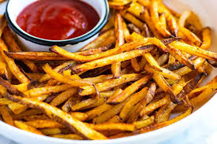
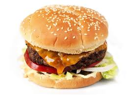
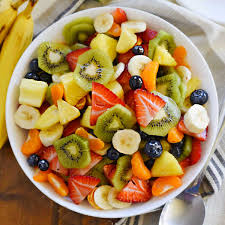
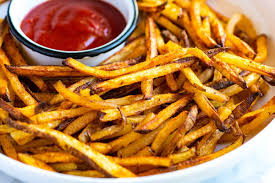
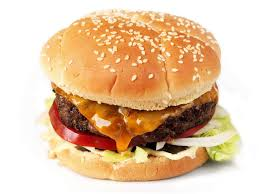
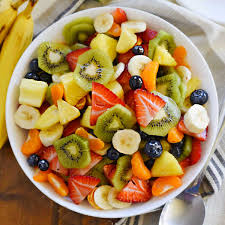

Pizza
French Fries
 Junk foodSalad
Hamburger
 Junk foodFruit salad
 healthy foodJunk food is Laregly different to healthy food
Most healthy foods such as Vegtables and fruits provide vitamins
JUNK FOOD DEFINITIOM HEALTHY FOOD DEFINITION
Pizza
 Junk food
Junk food
French Fries

Junk food
Salad
 healthy food
healthy food
Hamburger

Junk food
Fruit salad

healthy food
Junk food is Laregly different to healthy food
Most healthy foods such as Vegtables and fruits provide vitamins
JUNK FOOD DEFINITIOM
HEALTHY FOOD DEFINITION